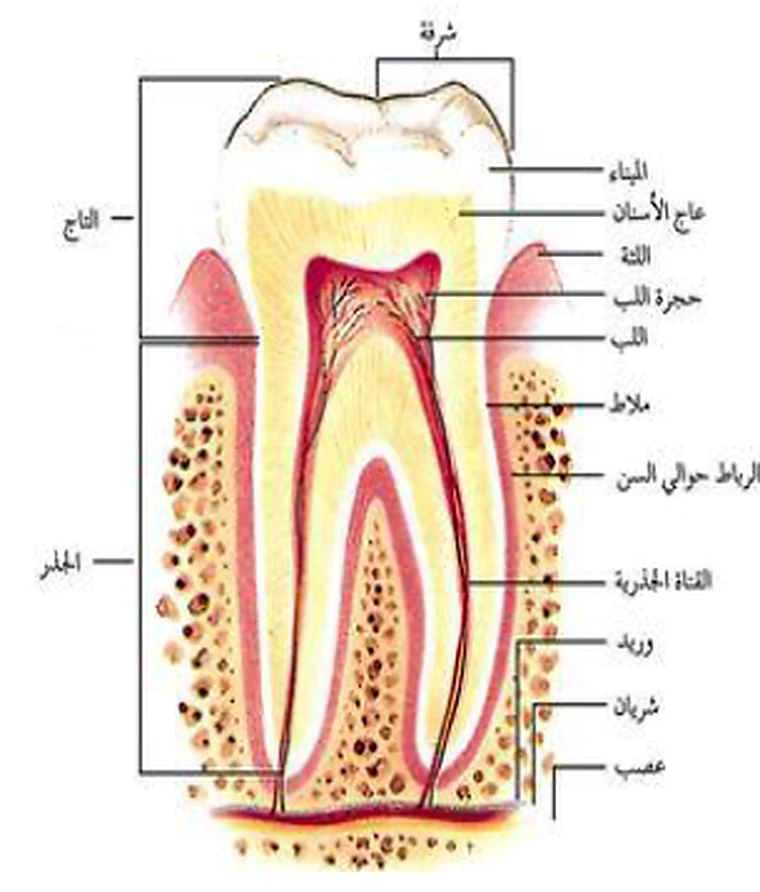
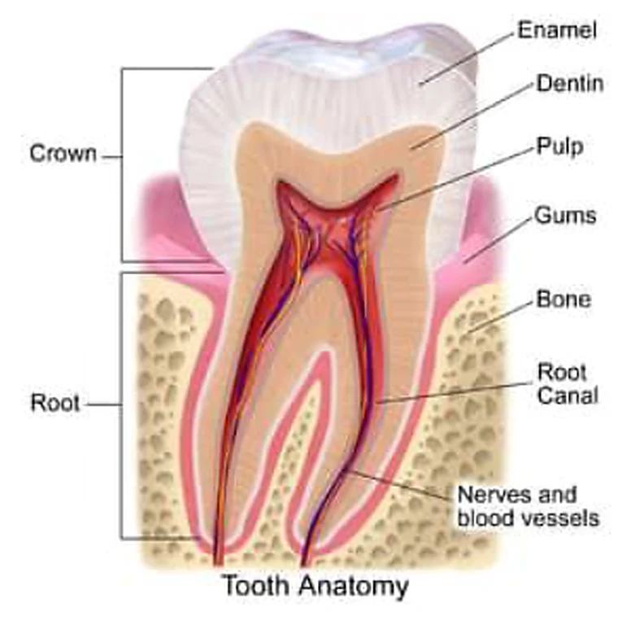
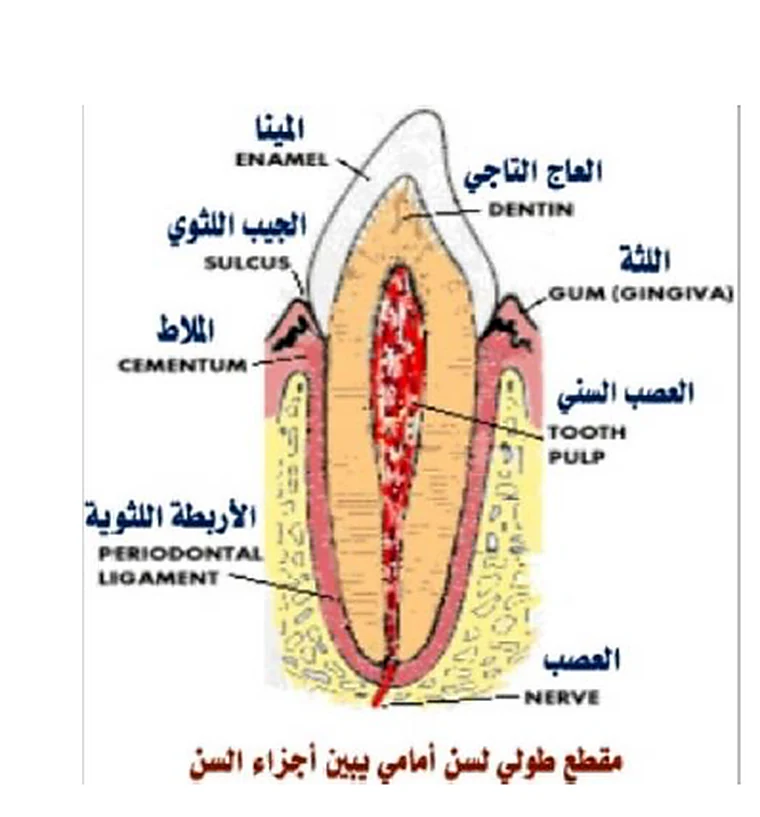

يقصد بالنسج الداعمة للسن أو (Periodont) جميع العناصر التي تثبت السن وتحافظ على وجودها الوظيفي،
وتشمل الملاط والنسج الداعمة المحيطة به، وفي هذه الصفحة نركز على:
اللثة والرباط السنيخي السني والعظم السنخي.
التهاب اللثةيظهر باحمرار وتورم وقد يترافق مع تقرحات.
الجيب السنييُكشف بإدخال المسبار حول السن بعمق يزيد على 3 مم.
المرض اللثويقد يؤدي إلى خراجات وتآكل العظم وتقلقل الأسنان وسقوطها.
تعاريف أولية
ما النسج المحيطة بالسن؟
08

الصورة المقتطعة من الصفحة الأصليةتوضح تموضع النسج المحيطة بالنسبة إلى التاج والجذر والعظم واللثة.
النسج الداعمة للسن: هي جميع النسج الداعمة للسن وتشمل الملاط والأنسجة والعظم والرباط واللثة.
أمراض النسج الداعمة للسن: هي جميع الحالات السريرية أو التدرج المرضي من النوع الالتهابي والمتخرب الذي يشمل جميع العناصر الداعمة للسن، وقد يتميز سريرياً بالتهاب اللثة وتشكل الخراجات وتآكل الأسنان وتقلقل الأسنان وسقوطها.
التهاب اللثة
يكشف هذا الالتهاب عند ظهور عرض أو مجموعة أعراض، مثل احمرار اللثة وتورمها وتقرحها.
الجيب السني
يكشف بإدخال المسبار حول السن بعمق يزيد عن 3 ملم، وهو دليل على إصابة مرضية أعمق في النسج الداعمة.
أولاً
اللثة
G
اللثة هي الجزء الأساسي من النسيج المحيط بالسن، وتتألف من نسيج حي مكوّن من نسيج ضام ورابطة لثوية.
تغلف اللثة العظم السنخي وتحيط بأعناق الأسنان، وتتكون من عدة مناطق رئيسية:
1
اللثة الحفافية (الحرة)
عرضها نحو 1 ملم، تغطي أعناق الأسنان وتنطبق عليها بشكل كبير، ويمكن إدخال آلية ذات رأس كليل بين السن واللثة لمسافة 0.5–1 ملم، وهذا ما يسمى الميزاب اللثوي. وإذا زادت المسافة فنكون أمام حالة مرضية تسمى الجيب السني.
2
اللثة الحليمية
هي بروزات أو حليمات صغيرة تتوضع بين الأسنان وتشكل المسافة بين السنية.
3
اللثة الملتصقة
تقع بين اللثة الحفافية وبين الغشاء المخاطي الفموي.
الصفات السريرية للثة الطبيعية
1- اللون:وردي فاتح في اللثة الحرة والملتصقة، ويتأثر بالتروية الدموية والسماكة ودرجة تقرن البشرة ووجود الخلايا الصباغية. وقد يكثر التصبغ الفيزيولوجي عند السود.
2- الحجم:يمثل الحجم اللثوي الحجم الكلي للعناصر الخلوية وبين الخلوية وشبكتها الوعائية، وتغيراته علامة شائعة لالتهاب اللثة.
3- المحيط:يتأثر بشكل الأسنان وانتظامها على القوس السنية، ويخضع لمنطقة التماس الملاصفة وأبعاد الفرجات اللثوية الدهليزية واللسانية.
صفات إضافية مهمة
5- القوام:اللثة قاسية مرنة وملتصقة بشدة على العظم الواقع تحتها، باستثناء اللثة الحرة.
6- المنظر السطحي:يبدو سطح اللثة متجعدات ناعمة تشبه قشر البرتقال، وتظهر بوضوح إذا جففنا اللثة.

رسم داعميفيد في تصور علاقة اللثة بالجذر والعظم وبقية أجزاء السن.
ثانياً
الرباط السنيخي السني
L
يشكل الرباط السنيخي السني أداة الربط بين السن والعظم السنخي، ويتشكل من ألياف كثيفة ترتبط بالعظم السنخي من جهة وبملاط السن من جهة أخرى.
يحتوي الرباط على شبكة من الشرايين والأوردة والألياف العصبية؛ لذلك إذا حدث احتقان فيه نتيجة عالٍ على مستوى الإطباق أو نتيجة التهاب ناتج عن الجراثيم الوافدة من الذروة، فإن زيادة السوائل الدموية في هذه المنطقة قد تدفع السن نحو الخارج فتبدو أعلى على مستوى الإطباق، ويظهر ألم عند الضغط.
التهاب الرباط الرضيينتج عن زيادة الضغط أو الاحتقان داخل الرباط، فيشعر المريض بألم على العض أو الانطباق.التهاب ثانوي من الذروةقد يكون الالتهاب ثانوياً ناتجاً عن الجراثيم الوافدة من الذروة، ولا سيما في الأسنان المتعفنة.
ثالثاً
العظم السنخي
B
العظم السنخي هو العظم الذي تنغرس فيه الأسنان، ويتألف من صفيحة عظمية دهليزية وأخرى لسانية وحواجز سنخية بين سنية.
وهو عظم إسفنجي، لذلك يسهل كسره أو رضّه، خاصة أثناء القلع الصعب. ويرتبط وجوده بوجود الأسنان؛ فعند قلع الأسنان يمتص هذا العظم ويزول.
يمتاز بأنه أضعف من بقية النسج حول السنية، ولذلك فإن كثيراً من الأمراض اللثوية تترافق بالامتصاص العظمي أو التراجع العظمي (رعل).
البنيةصفائح دهليزية ولسانية + حواجز سنية.الخواصعظم إسفنجي سهل الرض والكسر نسبياً.الأهمية السريريةيمتص بعد فقد السن ويتأثر بالأمراض اللثوية.

مخطط داعم من الصورة الأصليةيساعد على فهم موقع العظم السنخي بالنسبة إلى الجذر والرباط واللثة.
مقارنة سريعة
مقارنة بين العناصر الثلاثة
العنصر
الموقع
التركيب أو البنية
معلومة سريرية مهمة
اللثة
تحيط بأعناق الأسنان وتغلف العظم السنخي
نسيج ضام مع مكونات ظهارية ولثوية
زيادة عمق الميزاب تدل على جيب سني مرضي
الرباط السنيخي السني
بين الملاط والعظم السنخي
ألياف كثيفة مع أوعية وأعصاب
احتقانه يسبب ألماً على الإطباق وارتفاعاً بسيطاً للسن
العظم السنخي
العظم الحامل للأسنان
عظم إسفنجي + صفائح وحواجز سنية
يمتص بعد فقد الأسنان ويتأثر سريعاً بالأمراض اللثوية